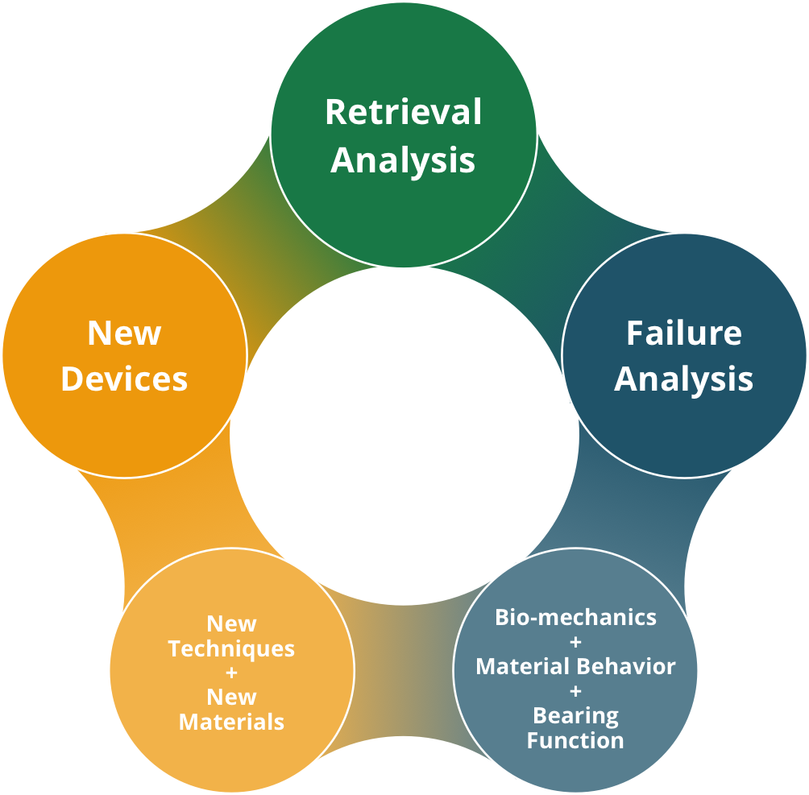

Short text about the image and how to use it to navigate the research of the website.


Dartmouth
Biomedical Engineering Center
Biomedical Engineering Center
Some tagline that includes the words orthopaedics and bioengineering.
Orthopaedic Device Retrieval ProgramActively tracking 17,000 orthopaedic devices.
Dartmouth Biomedical Engineering Center
The Dartmouth Biomedical Engineering Center is a collaborative effort that combines materials research, engineering design, and orthopaedic implant evaluation and application in an interactive teaching environment. Since the early 1970s, the Dartmouth Biomedical Engineering Center has evaluated more than 9,000 retrieved orthopaedic devices. Each retrieved device is examined visually, photographed, and rated for clinical damage. Additional material-specific testing is done to assess and understand the observed changes in the devices that occur in vivo. The response of biomaterials to patient demands reveals strengths and weaknesses of both the materials themselves and the design of the components in which they are used. The insights generated through formal assessment of the changes in these materials and devices provide the means to improve patient outcomes, which is the primary goal of the Dartmouth Biomedical Engineering Center.